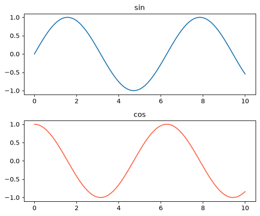
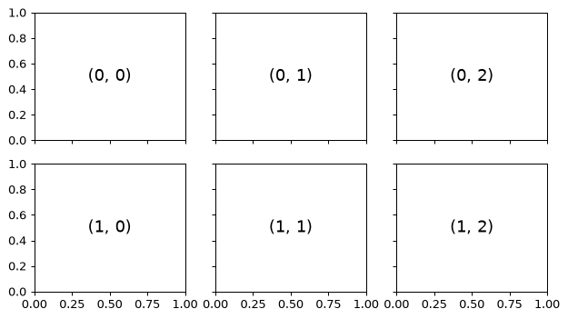
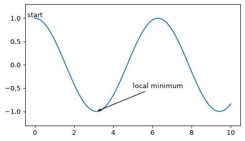
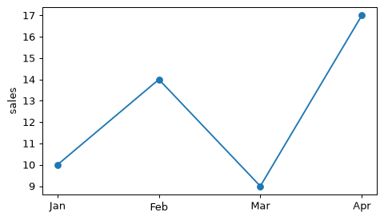
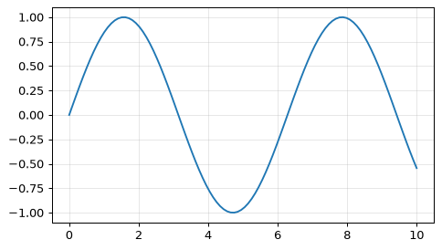

📖 対応する教科書：VanderPlas, Python Data Science Handbook（オンライン版）
- Handbook 4.08 Multiple Subplots
- Handbook 4.09 Text and Annotation
- Handbook 4.10 Customizing Ticks
①
複数のグラフを並べる：subplots
fig, axes = plt.subplots(行, 列)
1枚の図に複数のグラフを並べるには、plt.subplots(行数, 列数)を使います。
x = np.linspace(0, 10, 100) fig, axes = plt.subplots(2, 1, figsize=(6, 5)) axes[0].plot(x, np.sin(x)) axes[0].set_title('sin') axes[1].plot(x, np.cos(x), color='tomato') axes[1].set_title('cos') fig.tight_layout()

fig, axes = plt.subplots(2, 3, sharex=True, sharey=True, figsize=(7, 4)) for i in range(2): for j in range(3): axes[i, j].text(0.5, 0.5, str((i, j)), ha='center', va='center', fontsize=14) fig.tight_layout()

axesは配列で、2次元ならaxes[行, 列]で1つのグラフを指します。sharex・shareyで軸を共有でき、重複する目盛りを省けます。fig.tight_layout()で、タイトルやラベルが重ならないように自動調整します。
🍎 かんたん説明
subplots(2, 3)は2行3列のマス目。axes[1, 2]で「2行目の3列目」のグラフを選びます。
💻 ミニ練習：subplots
1行2列のグラフ領域を作り、左（axes[0]）に x, x、右（axes[1]）に x, x**2 を描いてください。
fig, axes = plt.subplots(1, 2) axes[0].plot(x, x) axes[1].plot(x, x ** 2)
1行2列なのでaxesは長さ2の配列です。
②
文字と注釈：text と annotate
図の中に説明を書き込む
ax.text(x, y, 文字)は、データ座標の位置に文字を置きます。annotateは矢印付きの注釈です。
fig, ax = plt.subplots() ax.plot(x, np.cos(x)) ax.text(0, 1.02, 'start', ha='center') ax.annotate('local minimum', xy=(np.pi, -1), xytext=(5, -0.5), arrowprops=dict(arrowstyle='->')) ax.set_ylim(-1.3, 1.3)

xyが指す点、xytextが文字を置く位置です。
🍎 かんたん説明
グラフの「ここが大事」を、文字と矢印で直接指し示せます。
💻 ミニ練習：注釈
点 (2, 4) に向かう矢印で、peak という注釈を付けてください（文字の位置は (1, 5)）。
ax.annotate('peak', xy=(2, 4), xytext=(1, 5), arrowprops=dict(arrowstyle='->'))
xyが指す先、xytextが文字の位置です。
③
目盛りを整える
set_xticks と formatter
目盛りの位置はset_xticks、表示する文字はset_xticklabelsで自由に変えられます。
months = ['Jan', 'Feb', 'Mar', 'Apr'] vals = [10, 14, 9, 17] fig, ax = plt.subplots() ax.plot(range(4), vals, marker='o') ax.set_xticks(range(4)) ax.set_xticklabels(months) ax.set_ylabel('sales')

fig, ax = plt.subplots() ax.plot(x, np.sin(x)) ax.xaxis.set_major_locator(plt.MultipleLocator(2)) ax.grid(True, alpha=0.3)

⚠️ 文字の長い目盛りが重なるときは、
plt.xticks(rotation=45)で斜めにします。🍎 かんたん説明
「どこに目盛りを置くか」と「何と書くか」を別々に指定できます。
💻 ミニ練習：目盛り
x軸の目盛りを 0, 1, 2 の位置に置き、ラベルを low, mid, high にしてください。
ax.set_xticks([0, 1, 2]) ax.set_xticklabels(['low', 'mid', 'high'])
位置とラベルを別々に指定します。
📝 確認クイズ
0 / 6
✏️ Questions are in English — answers are checked instantly.
Question 1
What does plt.subplots(2, 3) create?
Question 2
With axes from plt.subplots(2, 3), which expression selects the axes in the second row, third column?
Question 3
What is fig.tight_layout() for?
Question 4
In ax.annotate("text", xy=(2, 4), xytext=(1, 5), arrowprops=...), what is xy?
Question 5
Which pair of calls changes the x tick positions and their text?
Question 6
What do sharex=True and sharey=True do?